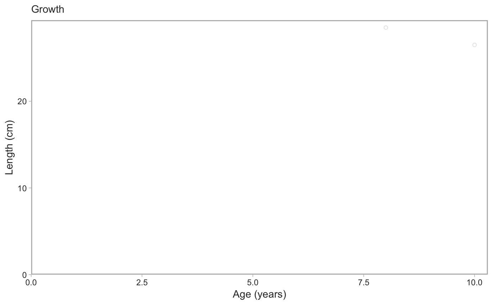

For use with data for a single species.
fit_vb(dat, sex = c("female", "male", "all"), method = c("tmb", "mpd", "mcmc"), downsample = Inf, chains = 4L, iter = 1000L, cores = parallel::detectCores(), allow_slow_mcmc = FALSE, est_method = median, min_samples = 50L, too_high_quantile = 1, uniform_priors = FALSE, ageing_method_codes = NULL, usability_codes = c(0, 1, 2, 6), ...)
Arguments
| dat | Input data frame. Should be from |
|---|---|
| sex | Either "male" or "female". |
| method |
|
| downsample | If not |
| chains | Number of Stan chains. |
| iter | Number of Stan sampling iterations. |
| cores | Number of cores for Stan. |
| allow_slow_mcmc | Logical. If |
| est_method | If MCMC this defines how to summarize the posterior. Should
be a function such as |
| min_samples | The minimum number of fish before a model will be fit. |
| too_high_quantile | A quantile above which to discard weights and lengths. Can be useful for outliers. Defaults to including all data. |
| uniform_priors | Logical. If true then uniform priors will be used. |
| ageing_method_codes | A numeric vector of ageing method codes to filter
on. Defaults to |
| usability_codes | An optional vector of usability codes.
All usability codes not in this vector will be omitted.
Set to |
| ... | Any other arguments to pass on to |
Examples
# with `rstan::optimizing()` for the mode of the posterior density: model_f <- fit_vb(pop_samples, sex = "female")#> Note: Using Makevars in /Users/seananderson/.R/Makevars#> Warning: NA/NaN function evaluationmodel_m <- fit_vb(pop_samples, sex = "male")#> Warning: NA/NaN function evaluationmodel_f$model#> $par #> k linf log_sigma t0 #> 0.200000 40.000000 -2.302585 -1.000000 #> #> $fn #> function (x = last.par, ...) #> { #> if (tracepar) { #> cat("par:\n") #> print(x) #> } #> if (!validpar(x)) #> return(NaN) #> res <- f(x, order = 0) #> if (!ADreport) { #> if (is.finite(res) && res < value.best) { #> last.par.best <<- x #> value.best <<- res #> } #> } #> res #> } #> <bytecode: 0x7feb29a70998> #> <environment: 0x7feb29a765e0> #> #> $gr #> function (x = last.par, ...) #> { #> ans <- f(x, order = 1) #> if (tracemgc) #> cat("outer mgc: ", max(abs(ans)), "\n") #> ans #> } #> <bytecode: 0x7feb29a6fa48> #> <environment: 0x7feb29a765e0> #> #> $he #> function (x = last.par, atomic = usingAtomics()) #> { #> if (!atomic) #> return(f(x, order = 2)) #> if (is.null(ADGrad)) #> ADGrad <<- .Call("MakeADGradObject", data, parameters, #> reportenv, PACKAGE = DLL) #> f(x, type = "ADGrad", order = 1) #> } #> <bytecode: 0x7feb29a6f348> #> <environment: 0x7feb29a765e0> #> #> $hessian #> [1] FALSE #> #> $method #> [1] "BFGS" #> #> $retape #> function (set.defaults = TRUE) #> { #> if (atomic) { #> Fun <<- .Call("MakeDoubleFunObject", data, parameters, #> reportenv, PACKAGE = DLL) #> out <- .Call("EvalDoubleFunObject", Fun$ptr, unlist(parameters), #> control = list(do_simulate = as.integer(0), get_reportdims = as.integer(1)), #> PACKAGE = DLL) #> ADreportDims <<- attr(out, "reportdims") #> } #> if (is.character(profile)) { #> random <<- c(random, profile) #> } #> if (is.character(random)) { #> if (!regexp) { #> if (!all(random %in% names(parameters))) { #> cat("Some 'random' effect names does not match 'parameter' list:\n") #> print(setdiff(random, names(parameters))) #> cat("(Note that regular expression match is disabled by default)\n") #> stop() #> } #> if (any(duplicated(random))) { #> cat("Duplicates in 'random' - will be removed\n") #> random <<- unique(random) #> } #> tmp <- lapply(parameters, function(x) x * 0) #> tmp[random] <- lapply(tmp[random], function(x) x * #> 0 + 1) #> random <<- which(as.logical(unlist(tmp))) #> if (length(random) == 0) #> random <<- NULL #> } #> if (regexp) { #> random <<- grepRandomParameters(parameters, random) #> if (length(random) == 0) { #> cat("Selected random effects did not match any model parameters.\n") #> random <<- NULL #> } #> } #> if (is.character(profile)) { #> tmp <- lapply(parameters, function(x) x * 0) #> tmp[profile] <- lapply(tmp[profile], function(x) x * #> 0 + 1) #> profile <<- match(which(as.logical(unlist(tmp))), #> random) #> if (length(profile) == 0) #> random <<- NULL #> if (any(duplicated(profile))) #> stop("Profile parameter vector not unique.") #> tmp <- rep(0L, length(random)) #> tmp[profile] <- 1L #> profile <<- tmp #> } #> if (set.defaults) { #> par <<- unlist(parameters) #> } #> } #> if ("ADFun" %in% type) { #> ADFun <<- .Call("MakeADFunObject", data, parameters, #> reportenv, control = list(report = as.integer(ADreport)), #> PACKAGE = DLL) #> if (set.defaults) { #> par <<- attr(ADFun$ptr, "par") #> last.par <<- par #> last.par1 <<- par #> last.par2 <<- par #> last.par.best <<- par #> value.best <<- Inf #> } #> } #> if ("Fun" %in% type) #> Fun <<- .Call("MakeDoubleFunObject", data, parameters, #> reportenv, PACKAGE = DLL) #> if ("ADGrad" %in% type) #> ADGrad <<- .Call("MakeADGradObject", data, parameters, #> reportenv, PACKAGE = DLL) #> env$skipFixedEffects <- !is.null(ADGrad) #> delayedAssign("spHess", sparseHessianFun(env, skipFixedEffects = skipFixedEffects), #> assign.env = env) #> } #> <bytecode: 0x7feb29b05948> #> <environment: 0x7feb29a765e0> #> #> $env #> <environment: 0x7feb29a765e0> #> #> $report #> function (par = last.par) #> { #> f(par, order = 0, type = "double") #> as.list(reportenv) #> } #> <bytecode: 0x7feb128e1cf0> #> <environment: 0x7feb29a765e0> #> #> $simulate #> function (par = last.par, complete = FALSE) #> { #> f(par, order = 0, type = "double", do_simulate = TRUE) #> sim <- as.list(reportenv) #> if (complete) { #> ans <- data #> ans[names(sim)] <- sim #> } #> else { #> ans <- sim #> } #> ans #> } #> <bytecode: 0x7feb128e1938> #> <environment: 0x7feb29a765e0> #>model_f$predictions#> # A tibble: 200 x 2 #> age length #> <dbl> <dbl> #> 1 2 15.2 #> 2 2.35 16.8 #> 3 2.70 18.3 #> 4 3.06 19.7 #> 5 3.41 21.0 #> 6 3.76 22.3 #> 7 4.11 23.5 #> 8 4.46 24.6 #> 9 4.81 25.6 #> 10 5.17 26.6 #> # … with 190 more rows# You can also fit both sexes combined if you want. # Just note that you need to specify the colours explicitly in the plot. model_all <- fit_vb(pop_samples, sex = "all")#> Warning: NA/NaN function evaluation# with MCMC via Stan (slower): x <- fit_vb(pop_samples, method = "mcmc", chains = 1, iter = 800, seed = 123) # just for a fast example#> #> SAMPLING FOR MODEL 'vb' NOW (CHAIN 1). #> Chain 1: #> Chain 1: Gradient evaluation took 0.000229 seconds #> Chain 1: 1000 transitions using 10 leapfrog steps per transition would take 2.29 seconds. #> Chain 1: Adjust your expectations accordingly! #> Chain 1: #> Chain 1: #> Chain 1: Iteration: 1 / 800 [ 0%] (Warmup) #> Chain 1: Iteration: 80 / 800 [ 10%] (Warmup) #> Chain 1: Iteration: 160 / 800 [ 20%] (Warmup) #> Chain 1: Iteration: 240 / 800 [ 30%] (Warmup) #> Chain 1: Iteration: 320 / 800 [ 40%] (Warmup) #> Chain 1: Iteration: 400 / 800 [ 50%] (Warmup) #> Chain 1: Iteration: 401 / 800 [ 50%] (Sampling) #> Chain 1: Iteration: 480 / 800 [ 60%] (Sampling) #> Chain 1: Iteration: 560 / 800 [ 70%] (Sampling) #> Chain 1: Iteration: 640 / 800 [ 80%] (Sampling) #> Chain 1: Iteration: 720 / 800 [ 90%] (Sampling) #> Chain 1: Iteration: 800 / 800 [100%] (Sampling) #> Chain 1: #> Chain 1: Elapsed Time: 0.680185 seconds (Warm-up) #> Chain 1: 0.665635 seconds (Sampling) #> Chain 1: 1.34582 seconds (Total) #> Chain 1:x$pars#> $k #> [1] 0.162283 #> #> $linf #> [1] 43.44346 #> #> $sigma #> [1] 0.07132792 #> #> $t0 #> [1] -0.6593035 #> #> $lp__ #> [1] 3093.675 #>x$predictions#> # A tibble: 200 x 2 #> age length #> <dbl> <dbl> #> 1 2 15.2 #> 2 2.35 16.8 #> 3 2.70 18.3 #> 4 3.06 19.7 #> 5 3.41 21.0 #> 6 3.76 22.2 #> 7 4.11 23.4 #> 8 4.46 24.5 #> 9 4.81 25.6 #> 10 5.17 26.6 #> # … with 190 more rowsx$data#> # A tibble: 1,444 x 34 #> trip_start_date year month gear survey_series_id survey_abbrev #> <dttm> <int> <int> <dbl> <dbl> <chr> #> 1 2011-07-05 00:00:00 2011 7 1 1 SYN QCS #> 2 2011-07-05 00:00:00 2011 7 1 1 SYN QCS #> 3 2011-07-05 00:00:00 2011 7 1 1 SYN QCS #> 4 2011-07-05 00:00:00 2011 7 1 1 SYN QCS #> 5 2011-07-05 00:00:00 2011 7 1 1 SYN QCS #> 6 2011-07-05 00:00:00 2011 7 1 1 SYN QCS #> 7 2011-07-05 00:00:00 2011 7 1 1 SYN QCS #> 8 2011-07-05 00:00:00 2011 7 1 1 SYN QCS #> 9 2011-07-05 00:00:00 2011 7 1 1 SYN QCS #> 10 2011-07-05 00:00:00 2011 7 1 1 SYN QCS #> # … with 1,434 more rows, and 28 more variables: survey_series_desc <chr>, #> # survey_id <int>, major_stat_area_code <chr>, major_stat_area_name <chr>, #> # minor_stat_area_code <chr>, species_code <chr>, species_common_name <chr>, #> # species_science_name <chr>, specimen_id <dbl>, sample_id <dbl>, sex <dbl>, #> # age <dbl>, sampling_desc <chr>, ageing_method <dbl>, length <dbl>, #> # weight <int>, maturity_code <dbl>, maturity_name <chr>, #> # maturity_desc <chr>, maturity_convention_code <dbl>, #> # maturity_convention_desc <chr>, maturity_convention_maxvalue <dbl>, #> # trip_sub_type_code <dbl>, sample_type_code <dbl>, #> # species_category_code <dbl>, sample_source_code <dbl>, #> # usability_code <dbl>, grouping_code <dbl>x$model#> Inference for Stan model: vb. #> 1 chains, each with iter=800; warmup=400; thin=1; #> post-warmup draws per chain=400, total post-warmup draws=400. #> #> mean se_mean sd 2.5% 25% 50% 75% 97.5% n_eff Rhat #> k 0.16 0.00 0.00 0.16 0.16 0.16 0.16 0.17 138 1.02 #> linf 43.44 0.01 0.14 43.16 43.34 43.44 43.54 43.70 318 1.00 #> sigma 0.07 0.00 0.00 0.07 0.07 0.07 0.07 0.07 257 1.00 #> t0 -0.66 0.01 0.11 -0.88 -0.73 -0.66 -0.59 -0.45 145 1.02 #> lp__ 3093.29 0.14 1.54 3090.12 3092.49 3093.68 3094.35 3095.12 125 1.01 #> #> Samples were drawn using NUTS(diag_e) at Mon Mar 25 12:00:45 2019. #> For each parameter, n_eff is a crude measure of effective sample size, #> and Rhat is the potential scale reduction factor on split chains (at #> convergence, Rhat=1).# If less than `min_samples`, fit_vb() returns an empty object that # plot_vb() will correctly parse and produce an empty plot: obj <- fit_vb(pop_samples[1:2,]) plot_vb(obj, obj)